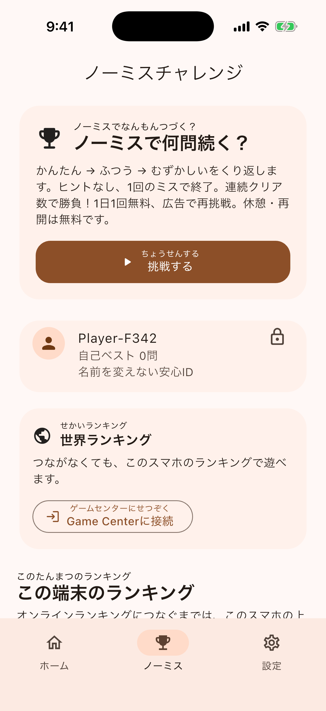
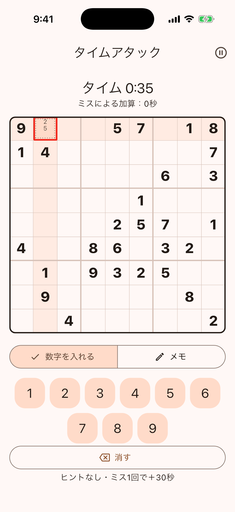
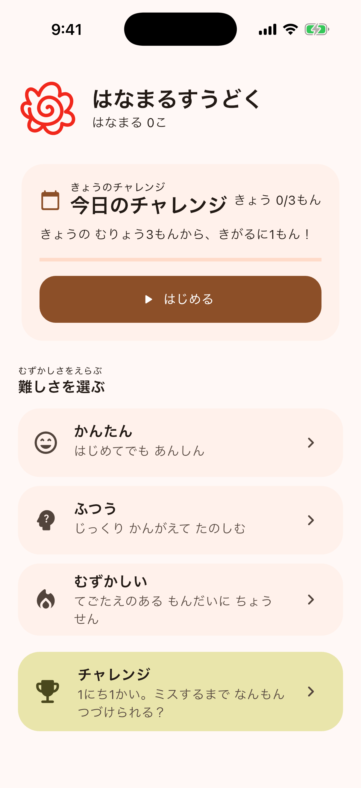

① マスを選ぶ
空いているマスをタップ。赤い枠が、今選んでいるマスです。
一度のミスで終了。自分の最高記録へ。
ヒントなしで連続クリア数を競うナンプレ。
9×9のタイムアタックでも、最速記録に挑戦。
休憩して、続きから。初心者には4×4の練習も。
iPhone・iPad向け。現在は公開準備中です。
日本語・英語・中国語・韓国語に対応。

空いているマスをタップ。赤い枠が、今選んでいるマスです。
下の数字をタップ。たて・よこ・太い線の中で、同じ数字が重ならないように置きます。
練習・今日のチャレンジは1問3回無料。ノーミス・タイムアタックでは使えません。手動メモは全モードで無料です。まずは4×4の練習からどうぞ。
かんたん（4×4）→ふつう（6×6）→むずかしい（9×9）をくり返します。ヒントなし、最初の間違いで終了。何問連続でクリアできるかを競い、端末内の上位10件に記録します。
接続は任意です。接続時・接続中の終了時・世界ランキングを開く時に、保存済みの最高記録がAppleに送られ、世界ランキングにはGame Centerの名前が表示されます。端末内の匿名IDとは別です。
ノーミス挑戦は途中で保存できます。アプリを閉じても同じ盤面・連続クリア数から無料で再開。休憩中のスコアは送信しません。
練習はかんたん・ふつう・むずかしいを選べ、何回間違えても終了しません。今日のチャレンジは3ミスでいったん中断。任意の広告1回で、同じ問題にさらに3ミスまで挑戦できます。クリアで1日3つまではなまるを集められます。ノーミスは1ミスで終了し、広告での復活はありません。
9×9の1問を解く速さで勝負。ヒントなし、メモは使えます。ミス1回につき30秒加算。休憩中やアプリを閉じている間も時計は進みます。ノーミスとは別に1日1回無料、広告1回で1回追加できます。
「チャレンジ挑戦し放題」と「全部入り」は、ノーミス・タイムアタックの両方が広告なし・回数制限なしです。以前の「ノーミス挑戦し放題」の購入も対象です。
ホームの大きなボタンから今日の問題をすぐに開始できます。当日中断中は続きから再開できます。ノーミスとタイムアタックは2枚のカードにまとめ、最高記録・最速記録と、取得できた世界順位を表示します。取得できない順位は表示しません。練習は3つの難易度ボタンから選べます。


「メモ」に切り替えて候補の数字をタップ。同じ数字をもう一度押すと外せます。小さい候補と点線枠で確定数字と区別できます。メモでミスやタイム加算は発生しません。
毎日、ノーミス1回・タイムアタック1回・練習5回・今日のチャレンジ3回を無料で開始できます。広告1回でプレイ1回を追加。練習・ノーミス・タイムアタックの追加回数に上限はなく、今日の新しい問題を追加する広告は1日3回まで。同じ問題の3ミス後の続行広告には回数制限はありません。ヒントは1問3回無料、広告1回で3回追加（広告は1問2回まで）です。広告は自分で選んだ時だけ表示し、自動では出ません。公開準備中のテスト版はテスト広告で、本番の配信設定は確認中です。
ノーミス・タイムアタック・今日のチャレンジは途中の盤面も保存・無料再開できます。タイムアタックは休憩中も計時します。今日のチャレンジは日付が変わっても開始した日のはなまるとして記録され、休憩ではミス回数は回復しません。練習には途中保存はありません。クリア履歴・はなまる・記録は端末内保存で、端末間の進捗同期はありません。
累計はなまる3個ごとに、青・緑・桃・紫・金の色が順に解放されます。練習のはなまるも対象です。「設定」で選べ、広告や購入は不要です。下のホーム・チャレンジ・設定タブで画面を切り替えられます。
任意の買い切りでチャレンジ挑戦し放題（ノーミス・タイムアタック）、練習・毎日の広告なし、全部入りを選べます。個別購入後の追加アップグレードと購入復元に対応。月額料金はありません。価格は購入画面で確認してください。毎日はなまる3つ・1問のヒント最大9回・ノーミスのヒントなしは変わりません。購入機能は現在テスト中です。
はい。通常のナンプレと端末内ランキングは、Game Centerに接続しなくても利用できます。世界ランキングは通信とAppleのGame Centerアカウントが必要です。
端末内のデータはアプリを削除すると削除されます。バックアップの扱いはiOSの設定に従います。Apple側のGame Centerデータについては、Appleの設定・サポートをご確認ください。
不具合・ご意見・プライバシーに関するお問い合わせは、minnanosakusenboard@gmail.comへ。「はなまるすうどく」と、端末・iOS・アプリのバージョンを添えてください。パスワード、年齢、住所などは送らないでください。
Solve one 9×9 puzzle as fast as you can. No hints; pencil notes are allowed. Each mistake adds 30 seconds. The clock keeps running during breaks and while the app is closed. One free run daily, separate from No-Mistake; one ad adds one run.
Unlimited Challenges and the All-in-One Pack include unlimited, ad-free No-Mistake and Time Attack runs. Previous Unlimited No-Mistake purchases also qualify.
No mistakes. How far can you go? Cycle Easy → Normal → Hard without hints; your first mistake ends the run. Compete on consecutive clears, with optional Game Center world rankings. The leaderboard shows your Game Center name, not your local anonymous ID. Pause, close the app and resume the same board for free; paused scores are not submitted.
Practice never ends for mistakes and has 5 free starts a day. Daily Challenge has 3 free starts. After 3 mistakes, one optional ad lets you continue the same puzzle with 3 more chances. Collect up to 3 daily stamps. Both modes include 3 free hints per puzzle. Daily and no-mistake runs can be paused and resumed for free. No-Mistake runs end on the first mistake and cannot be revived. Ads only appear when you choose them. Every 3 total stamps unlock a board color in Settings.
Optional one-time purchases unlock unlimited ranked runs, ad-free practice and daily play, or both. A separate upgrade is available after buying one pack. See the purchase screen for prices and restore purchases there. Daily stamps stay capped at 3, hints at 9 per puzzle, and ranked runs have no hints.
One optional ad adds one new start: practice and ranked extras have no limit; extra daily starts are capped at 3 ads per day. Ads to continue the same daily puzzle after mistakes have no count limit. An ad adds 3 hints, up to twice per puzzle. Unfinished practice boards and cross-device progress sync are not supported. Test builds use test ads; production ads and purchases are being verified.
Contact: minnanosakusenboard@gmail.com · Privacy policy
尽快完成一道9×9数独。无提示，可使用笔记。每次失误加30秒。暂停及关闭应用期间仍计时。与零失误模式分别每天免费1次，观看一次广告可追加1次。
无限挑战和全部解锁均包含零失误及计时挑战，免广告且不限次数。之前购买的无限无失误挑战同样适用。
一次不出错，能连续过几关？无提示，简单→普通→困难循环，首次失误即结束，以连续通关数排名。可选Game Center世界排行榜，显示Game Center名称而非本机匿名ID。可暂停并关闭应用，免费从同一棋盘继续，暂停成绩不提交。
练习答错也不结束，每天免费5次。每日挑战每天免费3次；错3次后暂停，主动看一次广告可继续同一道题并获得3次机会。每天最多收集3个花丸，两种模式每题均有3次免费提示。每日挑战与无失误挑战可保存并免费继续。零失误挑战错一次即结束，不能复活。广告仅在主动选择时显示。累计每3个花丸解锁一种棋盘颜色，可在设置中更换。
可选一次性购买：排行挑战不限次数、练习与每日挑战免广告，或全部解锁。购买一个单独组合后可另行升级。价格与恢复购买在购买页面查看。每天最多3个花丸，每题最多9次提示，排行挑战始终无提示。
主动观看一次广告可开始1次新游戏：练习与排行追加不限次数，每日挑战新题追加广告每天最多3次。同一道每日题目失误后的继续广告次数不限。每次广告追加3次提示，每题最多2次。练习不支持中途保存，不支持跨设备进度同步。测试版使用测试广告，正式广告与购买功能正在确认。
Contact: minnanosakusenboard@gmail.com · Privacy policy
9×9 한 문제를 최대한 빨리 풀어요. 힌트 없이 메모는 사용할 수 있어요. 실수마다 30초가 추가됩니다. 쉬거나 앱을 닫아도 시간은 계속 흘러요. 노미스와 별도로 하루 1회 무료, 광고 1회로 1회를 추가해요.
무제한 챌린지와 올인원 팩은 노미스·타임 어택 모두 광고 없이 무제한 도전할 수 있어요. 이전 노미스 무제한 도전 구매도 포함됩니다.
실수 없이, 몇 문제까지? 힌트 없이 쉬움→보통→어려움을 반복하며 한 번 틀리면 종료됩니다. 연속 성공 수로 겨루고 선택적으로 Game Center 세계 순위에 참여하세요. 순위에는 기기 익명 ID가 아닌 Game Center 이름이 나옵니다. 저장하고 앱을 닫아도 같은 보드에서 무료로 이어 할 수 있으며 쉬는 점수는 제출하지 않습니다.
연습은 틀려도 끝나지 않고 하루 5회 무료입니다. 오늘의 도전은 하루 3회 무료이며 3번 틀리면 멈춥니다. 원할 때 광고 1회를 보면 같은 문제에서 기회 3회를 더 받을 수 있어요. 하루 도장 최대 3개, 두 모드 모두 문제당 무료 힌트 3회입니다. 오늘의 도전과 노미스 도전은 저장 후 무료로 이어 할 수 있어요. 노미스 도전은 한 번 틀리면 끝나고 부활할 수 없습니다. 광고는 선택할 때만 나옵니다. 누적 도장 3개마다 보드 색상이 열리며 설정에서 바꿀 수 있어요.
월정액이 아닌 일회성 구매로 순위 도전 무제한, 연습·오늘의 도전 광고 제거, 또는 모두를 선택할 수 있어요. 하나를 구매한 뒤 추가 업그레이드도 가능합니다. 가격과 구매 복원은 구매 화면에서 확인하세요. 하루 도장 3개, 문제당 힌트 최대 9회, 순위 도전의 힌트 없음은 유지됩니다.
선택한 광고 1회로 새 플레이 1회를 추가합니다. 연습·순위 추가는 제한이 없고 오늘의 새 문제 추가 광고는 하루 최대 3회입니다. 같은 오늘의 문제에서 실수 후 이어 하는 광고는 횟수 제한이 없습니다. 광고당 힌트 3회 추가, 문제당 최대 2회입니다. 연습 중간 저장과 기기 간 동기화는 없습니다. 테스트 광고를 사용 중이며 실제 광고와 구매를 확인 중입니다.
Contact: minnanosakusenboard@gmail.com · Privacy policy